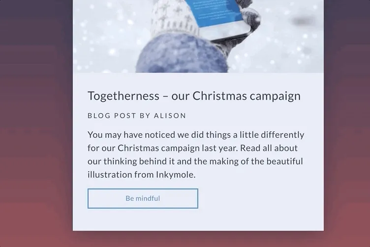
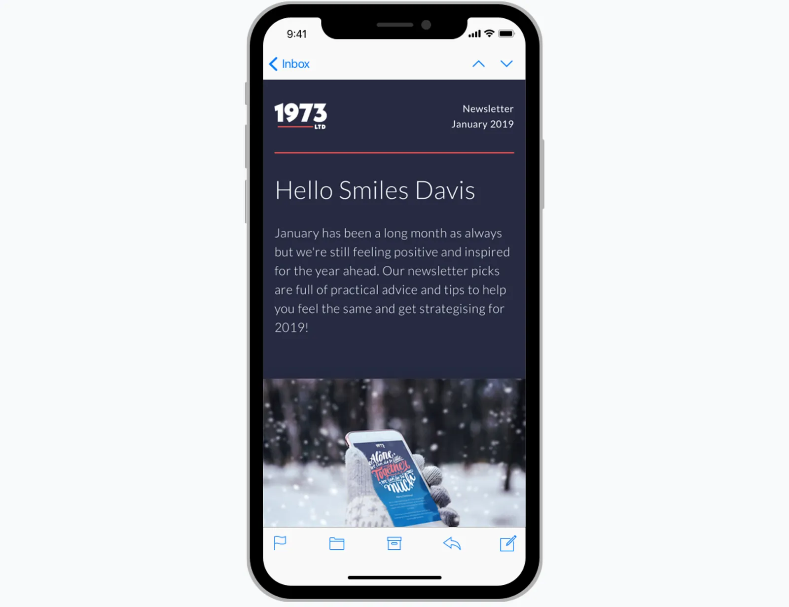

What do you do when you are in front of hundreds of email geeks on an unsuspecting weekend in the South? Pee your pants? Cuss like a sailor? Show off some kick-a** designs and code that will make grown men and women cry with joy?
You will definitely see that last option in this week’s Feedback Friday, coming at you from the UNSPAM stage in Greenville, South Carolina. Get ready for hover states and interactive emails.
Matt: Hey Email Geeks! This week we got a special episode from our UNSPAM conference. We were lucky enough to get Alice Lee from Litmus for our first live recording. Big thanks to Litmus for making this episode possible. Check out Litmus Builder. It’s a great tool to help streamline your email design and development workflow.

Alice: Hi everyone! My name is Alice Lee and I’m the Principle Email Engineer over at Litmus. I just started in December and I’ve been coding almost every email since. Before that I was at Shutterstock and then before that Oracle Responsys and then before that was Epsilon. So I’ve been in the email game for quite some time. Since 2007.
Matt: I think you are the OG email person. So you actually gave me a few emails to look at this week and I’m really excited to go through them with you.
Alice: Awesome.
Matt: Can you tell me a little bit about this first one?
Alice: This was created back in 2015, so if you are looking at it and you’re like “Oh no… It’s white text on top of a photograph. That’s something not to do.” That would explain why. It is like 4 years old. This is based on the first ever kinetic interactive emails that I coded for Oracle. Which was for the Lego Bionicle email back in the day.
It’s based on old school hover interactivity (using hovers that activate sibling selectors in CSS). So this is not quite checkbox yet. I like to look at it in terms of beta interactive email. There is definitely room for improvement. You can see we have to have a call out: “Tap buttons to see what happens!”. Just to tell people, “Hey! You can actually interact with this email. It’s not a click-through. It’s a carousel.”
And it is mobile responsive. So if you hover over you can see all the different slides going past. It is a background image with CSS-animated transparent PNGs that float on top.
Matt: Ooooh aaaahh fanncccyyyy
Alice: The reason we did that instead of animated PNGs is because animated PNGs aren’t very well supported (still). Animated GIFs don’t support translucency, so you end up with jagged edges. So this was the best way that I was able to come up with to retain the background image and have animation.
Matt: So how does this sorta process work? Does Shutterstock come to you and say, “Hey we want and interactive email.”?
Alice: When they hired me they knew I was all about interactivity. I showed the Lego Bionicle email during my interview. As soon as I got hired I was like, “Let’s go on this! We should do it!”. Finally they found a good excuse for me to do it.
Matt: So were there any unique challenges for this one? Outside of what you covered?
Alice: Just the amount of code time involved really and all the testing to make sure it worked. And actually the interactive code that I tested first on Lego postion:absolute stopped working on Android between then and this email so I had to refactor all of the dimensions and all the positioning to work with postion:relative instead.
Matt: Does this have a fallback on different email clients then?
Alice: Yeah absolutely it does. It works on a similar fallback principle to what I will be presenting next. Which is just a normal animated GIF layout.
Matt: That’s actually a good transition to the next email. Is this another Shutterstock one?
Alice: This is for Offset, which is Shutterstock’s more premium brand. This does use a punched card carousel technique to control the slides forward and backward. You can click on either of the arrows. Which are animated with CSS or if you can click on the little rectangle above to activate the carousel.
Matt: Does this go by itself at all? Is that a possibility in email?
Alice: You could add a CSS animation to it, but it wouldn’t be as well supported. That is why we only use CSS animations sparingly on the arrows.
Matt: I notice that we’ve seen a lot of hover effects. Should we all just be adding hover effects to our buttons? Or when is it not a good choice to do animations?
Alice: I say yes. I am biased, but hover effects have a pretty good fallback. If it doesn’t hover it doesn’t break the entire email. Also hover effects are becoming integral for accessibility reasons. If you want your audience to interact with your email then a lot of times hover over a link and there’s no over effect the only thing that’s changing on the screen is your mouse cursor and often times it’s so subtle that you can’t tell. So I would definitely recommend adding hover effects just to make sure everyone knows where and when to click through.
Matt: I did notice this is white text on an image once again. 😀
What does the fallback on this one look like?
Alice: So this is the fallback that is in the HTML body by default. This one uses an external stylesheet to pull in all the interactive CSS. The reason for that is because usually there is a lot of overlap between whatever supports external CSS and whatever supports interactive CSS. So it’s just a way that I like to keep my code pretty clean.
Also sometimes if you have your interactive CSS in the embedded <style> tag it may conflict with any progressive enhancements. We don’t want to deal with that.
Matt: What is business ask for this one? Why would you use a carousel for this? Is there a specific value add that you wanted to communicate?
Alice: Shutterstock really wants to put a lot of focus on its stock imagery. We were always looking for better ways to display our product.
Matt: Now that you are at Litmus, we can look at your own emails. So is this one that you coded as well?
Alice: Well this is based on code that already existed that Kevin Mandeville came up with, but I ended up refactoring it because this newsletter was originally done in table-less style.
This is another way that we learn from our practices and see what doesn’t work. Unfortunately table-less emails don’t necessarily work that well if you are trying to sustain it as a developer. What was going on in this table-less was that there’s still ghost tables in the email for Outlook so whenever you wanted to make updates, you had to update it both in the <div> and the ghost table. So in that sense is it really table-less? Is it really that sustainable?
The answer we came to is that eventually not really. So I refactored it to do away with that and try to have minimal tables but also retain a lot of those semantic HTML tags involved (like <h> tags).
Matt: This top section is definitely the standout part of the email for me. This rollover effect to the video. How difficult is it for something like this to be implemented?
Alice: Not very difficult at all. This is just a hover effect that turns the opacity for the cover image from 100% to 0%. And it reveals the animated GIF as background image behind it.
Matt: I know that we talked before that there may be a few different ways to do this. Why is this the way that you chose?
Alice: I explored doing display:none instead of opacity:0 or visibly:hidden instead but the problem with those is that it reduced the image completely from the document flow. So if your mouse hovers over it just rapidly flickers on and off because it’s being removed and then coming back. You don’t want to deal with that jittery hover.
Matt: This transition is very smooth. I imagine the fallback for this is that the hover effect just doesn’t work. Right?
Alice: Yea. Then you can just click through and see where it goes.
Matt: I love that effect. It seems like an easy way to really spice up the email and get people to click on that section. So what would be the support for something like this?
Alice: This is actually pretty well supported across most email clients including Apple Mail and Gmail. Those are our two most popular.
Matt: Now we can judge some other people’s emails. We put you in the hot seat for the first few. We have some brands that we really like. I’m a big fan of this one. I’m always scared to use gradients in email.
Alice: What I loved about this is that it is a CSS linear gradient background and it’s combined with these CSS box-shadows and when they are both not supported it falls back to this flat dark-blue background. I feel like the top dark blue background compensates for the lack of the drop shadow. It gets lighter later on. It really doesn’t detract from the experience that much.
Matt: We where playing around with Litmus Builder earlier and there are a bunch of different views. For example, you can turn off images and see how the email will look. As you can see here, this is a good example of how important live text is. This email is still pretty readable. I can get all the information from it. I can still see CTAs.
Alice: …and those CTAs have a great hover effect with a slight transition. Inverting the background and text colors is an easy way to help retain the contrast ratio.

Matt: I’m a big fan of what they do. Every time I get one of their emails I’m excited to see what they’ve done.
Alice: Let’s take a look on mobile.

Matt: I’m really into brands that take time to style that mobile stylesheet. Really think about how it is going to look. When a desktop email is laid out in a PSD the mobile optimization part might be the last part. Spending a bit more time on that really makes it stand out.
Alice: This is kinda weird, but I really like the fact that horizontal line at the top of the email goes from being on the side margin to being full size on mobile. Something like that is just really special to me. When the email resizes to mobile, the side margins disappear to give more horizontal real estate.
Matt: Are these web-fonts?
Alice: Yea! They are a custom web font “Lato” via @import.
Matt: I’m assuming just a fallback to a web-safe font.
One of my favorites is this one from Invision. We’ve actually talked about them before on Feedback Friday. You showed me this and I really got into this animation right here.

Alice: OMG. I love that. When you hover over the entire module changes. I took this apart the other night so all images are wrapped in a SPAN, and all of that is wrapped in an A tag with a hover effect. Activating the hover on the A tag causes the SPAN tag to use a CSS transition to change the background position of a transparent PNG corner image from being behind the image to being display:block on top of the image. The position pulls it from the bottom corner into the image to reproduce this page-curling look.

Matt: I am impressed.
Alice: Only negative — I wish the hover effect on the link list below was more obvious and less subtle. It just makes it a bit darker. For people who have challenges with vision — like myself even — it’s hard to tell when you’ve actually hovered over or tabbed over one of those text links. Even doing something like removing the underline on hover would help a lot.

Matt: So this is done with a CSS animation right?
Alice: No. It’s actually a CSS transition. There is a difference. Transition is more supported across more email clients.
Matt: This also looks like a custom web-font.
Alice: Yea. This one is “Poppins”, pulled in with an external stylesheet straight from the Google Fonts API.
Matt: This is just a newsletter. It is impressive to me that they take the time to do this sort of stuff. Investing in templates like this and reusing them with different content is really fantastic.
Alice: Absolutely. I’m subscribed to this newsletter and every time they send it out, I’m like “Ohh! They are doing three columns this time instead of two columns.” Just subtle changes they make really impress me.
Matt: We have a few more to look at. This one has a really fantastic GIF.

Alice: This one I really like. This is a digital marketing agency in the Netherlands. They seem to be really proud of their newsletters to the point that they actually put it on the front page of their website.
Scroll all the way to the bottom and read all their newsletters. They all fit into this same format so you can tell that it’s part of the same series.
Matt: It’s a long one.

Alice: It’s pretty long. These templates by DPDK serve as this really well-designed container for all the different themes they do. This one is promoting a glitch themed newsletter. It’s very glitchy. In a good way.
Matt: This big button GIF trend really stood out to me when I first opened this. What do you think of that?
Alice: It’s like a love hate thing. I hate it that it is mostly images, but I also love that it is animated. It is unfortunate. If I were to do this, I would try to put at least some live system text on top of a live animated background GIF.
I suppose that GIFs are the way that works for their newsletter. I like the fact that the largeness and the boldness of the animation makes it stand out in a unique way from all the other competing graphical elements.

Matt: This use of images may be to support layouts that could be difficult to code in email. I understand in order to do these types of layouts relying on images is an option. I do like that the content doesn’t really seem repetitive. When scrolling down the email each section stands out. That flow GIF grabs your attention right away when you open the email. It totally pulls me in.

We have one more from them too.
Alice: This is just another example how they are using the similar newsletter layout with a completely different theme. This incorporates a lot of the themes that Meghan from Emma spoke about in her session. The illustrative style as well as the diagonals to bring your eye down.

The animated GIF is awesome, and it looks so smooth because the very graphic look of this with solid colors instead of gradients and shadows means that each color is encoded smoothly into the GIF format.

Matt: So when you are designing emails at Litmus now what kind of new ideas are trying to bring in? Are you getting your inspiration from different emails you see? How are you coming up with new things?
Alice: Absolutely. We just hired an email designer that is fantastic, Lily Worth. She wrote a great blog post about the rise of illustrations in email. She’s pretty passionate about and she’s going to try to incorporate more of that as well.
Matt: We did mention that a few of these are mostly images. How important is accessibility when you are designing these emails?
Alice: We are also trying to put more focus on accessibility. Of course because some of these examples are mostly imagery, it’s not super accessibility friendly. Another great thing that we’ll be doing, is that we are really trying to make sure and test every background color and text color combo to make sure it’s AA certified.
I’ll be refactoring all of our old emails to be more accessibility friendly. Checking for missing ALT tags, making sure that tables have role=“presentation” on them. There is like a whole checklist that I go through.
Matt: What really interests me was when you talked about that original Lego Bionicle email. What drove you to even try to make that happen? What motivated you? Why do you keep trying new things with interactive email?

Alice: Our client at the time, Lego, was relaunching their Bionicle brand. They really wanted to display something truly innovative in their email. We had just started experimenting with interactive CSS for B&H. The problem with that email is that their CSS wasn’t super reusable or templatable. So I did a new version of that where we could re-use it, insert new images and try new layouts with it.
Matt: Is there anything coming up next that you are really interested in? Do you believe the hype around the whole AMP thing?
Alice: It sounds like a lot of people are in the wait and see boat. While I am really excited to try it out, it’s difficult to find ways to actually send it out right now.
Matt: Any other CSS or email client support things that you think will come soon?
Alice: I do think that we are making strides with accessibility specifically. So the more people adopt that, there can be new sources available for that.
Matt: Last question. So all this stuff looks great, but how do I tell my boss that I want to make and email like this? How do you get buy-in to try interactive email?
Alice: Interactive email has performed well for the clients that I’ve worked with before. Your milage may vary, but for the emails that I’ve produced we’ve seen at least a 10% increase in click-through-rate (CTR) and a 11% ROI. For Offset when we introduced interactivity our first time conversions where 123% increase. That’s pretty good. I could take those numbers and told my boss, “Hey look! We had this success with it before. Why not try redo it?”.
Matt: That’s about it! Thanks for taking the time!
Subscribe to the youtube.com/reallygoodemails channel to see the new episode published each week.